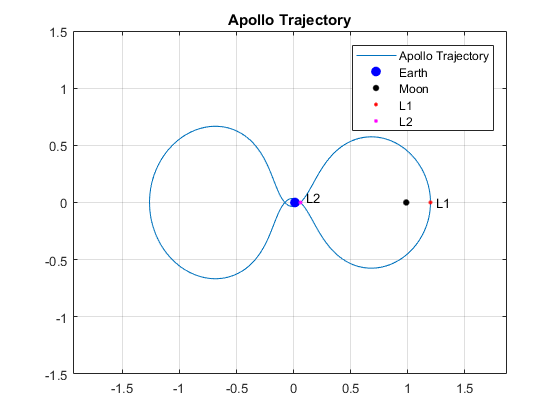
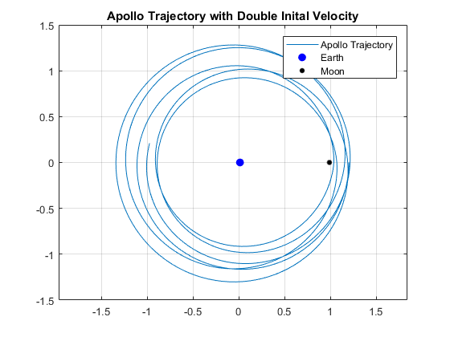
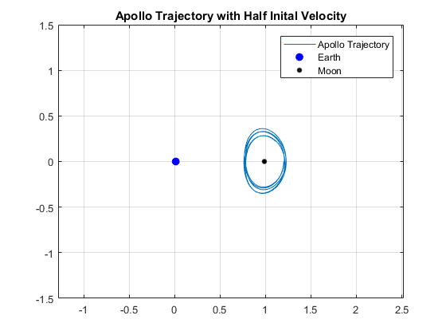
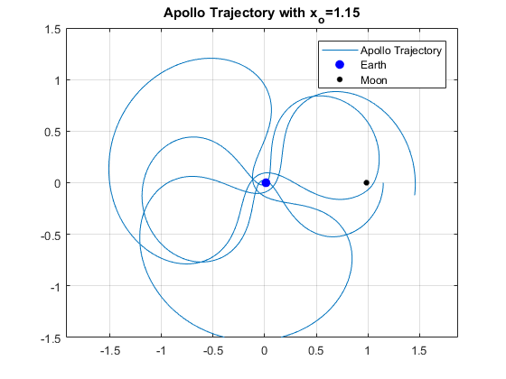

Problem 7
clear all; close all; clc mu = 0.01214; mu_star = 1-mu; ic = [1.2 0 0 -1.04935751]; T = 6.19216933; options = odeset('RelTol',1e-6); [Time,Z] = ode45('Apollo',[0 3*T],ic,options); x = Z(:,1); y = Z(:,2); L1 = max(x); L2 = 0.06085; plot(x,y); hold on; plot(mu,0,'.b','MarkerSize',25) plot(mu_star,0,'.k','MarkerSize',15) plot(L1,0,'.r','MarkerSize',8) plot(L2,0,'.m','MarkerSize',8) axis([-1.5 1.5 -1.5 1.5]) legend('Apollo Trajectory','Earth','Moon','L1','L2') text(L1+.05,0,'L1'); text(L2+.05,.05,'L2'); axis equal; grid on title('Apollo Trajectory') hold off; figure ic = [1.2 0 0 2*-1.04935751]; options = odeset('RelTol',1e-6); [Time,Z] = ode45('Apollo',[0 3*T],ic,options); x = Z(:,1); y = Z(:,2); plot(x,y); hold on; plot(mu,0,'.b','MarkerSize',25) plot(mu_star,0,'.k','MarkerSize',15) axis([-1.5 1.5 -1.5 1.5]) axis equal; grid on legend('Apollo Trajectory','Earth','Moon') title('Apollo Trajectory with Double Inital Velocity') hold off; figure ic = [1.2 0 0 1/2*-1.04935751]; options = odeset('RelTol',1e-6); [Time,Z] = ode45('Apollo',[0 3*T],ic,options); x = Z(:,1); y = Z(:,2); plot(x,y); hold on; plot(mu,0,'.b','MarkerSize',25) plot(mu_star,0,'.k','MarkerSize',15) axis([-1.5 1.5 -1.5 1.5]) axis equal; grid on legend('Apollo Trajectory','Earth','Moon') title('Apollo Trajectory with Half Inital Velocity') hold off; figure ic = [1.15 0 0 -1.04935751]; options = odeset('RelTol',1e-6); [Time,Z] = ode45('Apollo',[0 3*T],ic,options); x = Z(:,1); y = Z(:,2); plot(x,y); hold on; plot(mu,0,'.b','MarkerSize',25) plot(mu_star,0,'.k','MarkerSize',15) axis([-1.5 1.5 -1.5 1.5]) axis equal; grid on legend('Apollo Trajectory','Earth','Moon') title('Apollo Trajectory with x_o=1.15')   